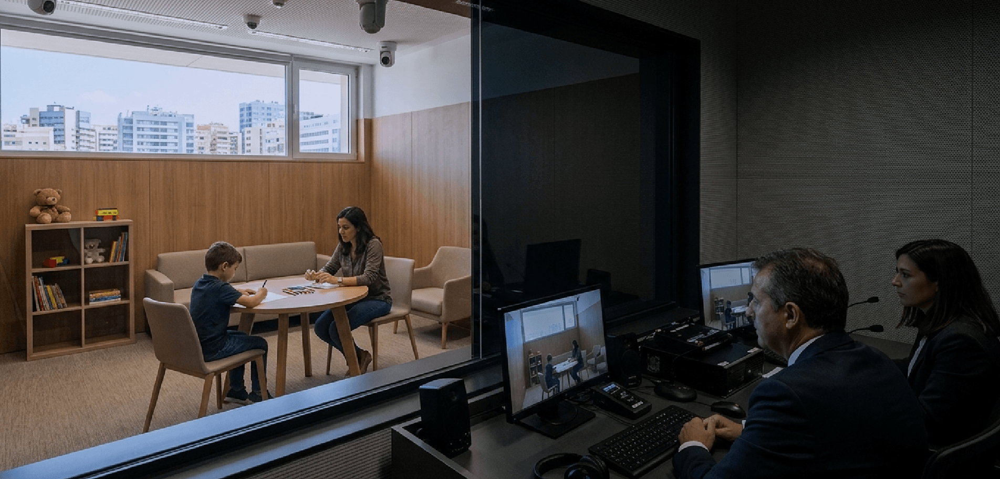

Intervención en Cámara Gesell
La Cámara Gesell es un dispositivo para entrevistar a niños, niñas y adolescentes de hasta 16 años en un entorno que los contenga, evitando su victimización y revictimización.
No es una pericia, sino un acto jurídico: el especialista recoge el testimonio con protocolos específicos y observa sus respuestas e interacciones.
Consultar este servicio